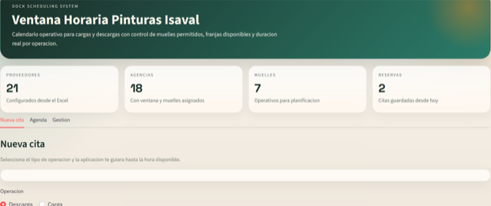
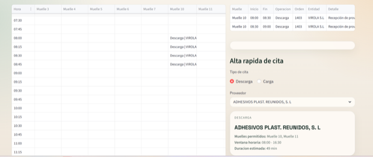
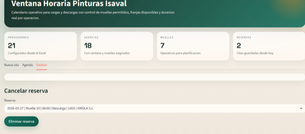

La operativa logística está experimentando situaciones de saturación, especialmente porque la mayor parte de las cargas de agencias se concentran entre las 17:00 y las 19:00. Esto genera picos de trabajo que derivan en estrés operativo y cierta desorganización.
Además, las descargas de producto, especialmente cuando se trata de mercancía voluminosa y coinciden varias en el mismo día, provocan bloqueos en las playas de preparación y dificultan significativamente el desarrollo de la operativa diaria.
La propuesta se define como algo más que una herramienta tecnológica: supone un cambio de modelo operativo hacia una planificación inteligente de cargas y descargas mediante un sistema de gestión de citas en muelles.
El funcionamiento planteado parte de una decisión simple: seleccionar carga o descarga, mostrar horarios disponibles y reservar una franja. Según proveedor y tipo de operación, el sistema asigna automáticamente el tiempo de ocupación del muelle. La reserva además podría cancelarse si no se va a poder cumplir el horario previsto.



La propuesta busca profesionalizar la gestión de muelles mediante una planificación anticipada, distribuida y trazable, reduciendo picos de saturación y preparando la base para una mejora continua apoyada en datos reales de operación.